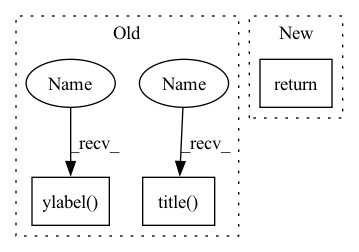

Pattern ID :25151

Before Change
max_x = x[-1] if x[-1] > max_x else max_x
plt.legend()
plt.xlabel(plot_obj["x"])
plt.ylabel(plot_obj["y"])
title = self.task if "title" not in plot_obj.keys() else plot_obj["title"]
plt.title(title)
plt.tight_layout()
return
def group_plot(self, plot_obj):
After Change
max_x = x[-1] if x[-1] > max_x else max_x
plt.legend()
plt.tight_layout()
return
def group_plot(self, plot_obj):
for id, item in enumerate(self.grouped_records.items()):
ax = self.get_current_axes(plot_obj, id)
In pattern: SUPERPATTERN
Frequency: 4
Non-data size: 3
Instances
Fragment ID: 76954674
Project Name: wwzzz/easyfl
Commit Name: 76492d038ba28d59ae72b442e2c9783ca7e33c6f
Time: 2022-07-27
Author: zzz510711928@gmail.com
File Name: utils/result_analysis.py
M Class Name: Drawer
N Class Name: Drawer
M Method Name: plot(2)
N Method Name: plot(2)
M Parent Class: Analyser
N Parent Class: Analyser
M File Name: utils/result_analysis.py
N File Name: utils/result_analysis.py
M Start Line: 209
M End Line: 217
N Start Line: 252
N End Line: 261
'>
Before Change
plt.close("all")
im = plt.imshow(encoder_variable_selection_weights[example_index], aspect="auto")
plt.ylabel("lookback steps")
plt.xticks(np.arange(model.ins), model.in_cols, rotation=90)
plt.colorbar(im, orientation="vertical", pad=0.05)
plt.title(example_index)
plt.savefig(os.path.join(maybe_create_path(model.path), f"{data_name}_enc_var_selec_{example_index}.png"),
bbox_inches="tight", dpi=300)
if show:
plt.show()
After Change
bbox_inches="tight", dpi=300)
if show:
plt.show()
return
def interpret_tft(self, model=None, data="test"):
global interpretation of TFT model.
'>
Fragment ID: 76954672
Project Name: atrcheema/dl4seq
Commit Name: 1930cfdbeef043503785c6635731b07dd9ca3a2d
Time: 2021-11-19
Author: sara.rwpk@gmail.com
File Name: ai4water/postprocessing/interpret/_interpret.py
M Class Name: Interpret
N Class Name: Interpret
M Method Name: interpret_example_tft(5)
N Method Name: interpret_example_tft(5)
M Parent Class: Plot
N Parent Class: Plot
M File Name: ai4water/postprocessing/interpret/_interpret.py
N File Name: ai4water/postprocessing/interpret/_interpret.py
M Start Line: 303
M End Line: 312
N Start Line: 304
N End Line: 313
'>
Before Change
mean_val = statistic_on_dicts(rec_dicts, name="mean", key=plot_obj["y"])
draw_curve_with_range(x, mean_val, min_val, max_val, legend=rec_dicts[0]["legend"], color=self.colors[id])
plt.xlabel(plot_obj["x"])
plt.ylabel(plot_obj["y"])
title = self.task if "title" not in plot_obj.keys() else plot_obj["title"]
plt.title(title)
plt.tight_layout()
return
def trace_2d(self, plot_obj, strong_end = True):
After Change
ax.legend()
// draw_curve_with_range(x, mean_val, min_val, max_val, legend=rec_dicts[0]["legend"], color=self.colors[id], ax=ax)
plt.tight_layout()
return
def trace_2d(self, plot_obj, strong_end = True):
// plot trace
default_size = 1
'>
Fragment ID: 76954671
Project Name: wwzzz/easyfl
Commit Name: 76492d038ba28d59ae72b442e2c9783ca7e33c6f
Time: 2022-07-27
Author: zzz510711928@gmail.com
File Name: utils/result_analysis.py
M Class Name: Drawer
N Class Name: Drawer
M Method Name: group_plot(2)
N Method Name: group_plot(2)
M Parent Class: Analyser
N Parent Class: Analyser
M File Name: utils/result_analysis.py
N File Name: utils/result_analysis.py
M Start Line: 223
M End Line: 232
N Start Line: 264
N End Line: 276